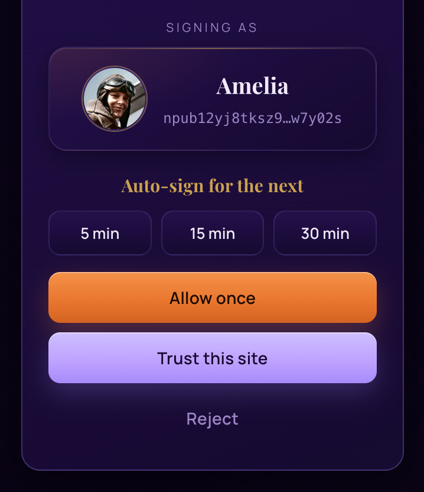
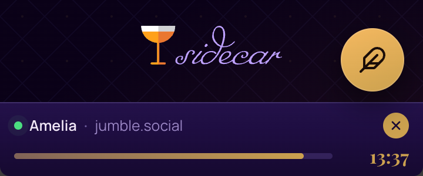
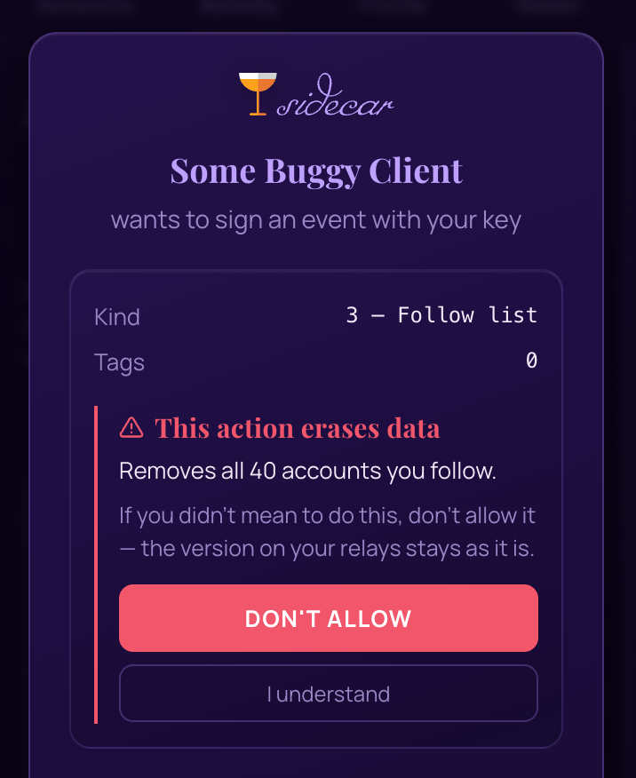

How Sidecar works.
A short guide to signing in, keeping several accounts, and understanding why different Nostr apps handle account switching differently.
The basics
Sidecar is a signer. It keeps your Nostr keys safe in the browser's side panel and signs things on your behalf. When a website wants you to log in, publish a note, or decrypt a message, it doesn't get your key. It asks Sidecar, Sidecar asks you, and if you approve, Sidecar hands back a signature. Your keys never leave the extension.
Everything is protected by the PIN you chose when you set up Sidecar, and the panel locks itself after a period of inactivity you can adjust in Settings.
On Firefox, Sidecar lives in the sidebar rather than the side panel — same signer, same features, and updates install automatically through the browser. Two Firefox specifics: extensions stay off in private windows unless you allow them (Manage Extensions → Sidecar → Run in Private Windows), and Sidecar needs the site access it asks for at install — if you declined that, the panel shows a one-click Grant access banner until it's restored.

Your accounts
Sidecar happily holds as many accounts as you like. Generate a fresh one or import an existing nsec from the Accounts tab. One account is always the active account, marked with a checkmark on the Accounts tab. Click another to switch.
The active account is the one Sidecar offers when you sign in somewhere new, and the one used when you post from Sidecar's own composer. Think of it as the account currently "at the wheel."

How sites remember who you are
Here's the part worth reading twice. When you sign in on a site, that site pairs with the account you signed in as. From then on, the site keeps signing with that account, even if you switch the active account in Sidecar's panel.
That's deliberate. If you're signed in to a site in one tab and switch accounts in Sidecar to do something else, you would not want that open session to quietly start posting as someone else. Pairing keeps every session honest: each site stays the identity it logged in with until you log it out.
You can see every pairing in the Activity tab, under Connected sites. Each site shows the account it's pinned to, along with its permission level and recent signing history.


Switching accounts
A site stays paired with the account it logged in with, so how you switch it to a different account depends on how that app handles users — and apps differ:
Some update the signed-in user when you reload. Switch accounts in Sidecar, refresh the page, and the app follows along.
Others keep their own multi-user switcher. You add each account to the app once, then flip between them inside the app — a refresh won't change who's signed in.
So logging out isn't always necessary. What matters is recognizing which kind of app you're in — the next section breaks down the two families. When a switch does call for a fresh login, the routine is the same everywhere: log out on the site, switch accounts in Sidecar, then log back in.
The shortcut. Whenever you switch the active account and a paired site is open in the current tab, Sidecar offers a Reload [site] button. For apps that re-check the extension on load, that single click usually does it.
A rule of thumb
The site decides who is signed in. Sidecar decides who signs in next.
Not every client behaves the same
Nostr apps fall into two families, and knowing which one you're in explains almost every "why am I still posting as the wrong account?" moment.
One user at a time
Primal, Iris, Snort, Zap Cooking, Nostrich, and most others
These apps have a single signed-in user: whoever the extension provided at login. There's no account menu inside the app, so the identity changes only when the login changes.
To switch, switch accounts in Sidecar and use the Reload [site] button Sidecar offers right after. These apps ask the extension again when the page loads, so that reload re-pairs them with your newly active account. If a reload doesn't do it, the full log out and log back in routine always will.

Built-in account switchers
Jumble, YakiHonne, noStrudel, Coracle
These clients keep their own list of accounts with a switcher inside the app. Each entry in that list is bound to the Sidecar account that was active when you added it. The client's switcher and Sidecar's switcher are two separate things: flipping one does not flip the other, and refreshing the page won't change the user, because the client remembers its own selection.
To get a second identity into the client's list: switch accounts in Sidecar first, then use the client's "add account" option and choose the browser extension method. Once each account is added and approved, you can hop between them using the client's own switcher.
A safety net. Because these clients can show one account while signing as another, Sidecar watches for the mismatch: once a site has signed in with more than one of your accounts, every post asks you to confirm who's signing, with a Multiple accounts used note on the prompt. So even when the client's switcher and Sidecar disagree, you catch it before anything publishes as the wrong you.
Background syncs are the exception. As you browse, clients quietly save app settings — read status, feed preferences, and the like. These aren't posts: nobody sees them in a feed, and they're harmless to write under either account. So Sidecar handles them for you rather than interrupting every few seconds to ask who's syncing. If you'd rather confirm each one, turn on Confirm background app-data syncs in Settings.

A pleasant detail: some clients, noStrudel among them, tell Sidecar exactly which account they expect on every signature. When Sidecar holds that account and it has approved the site, Sidecar signs with it automatically. In those clients, switching inside the app works seamlessly once each account has been added.
When every action asks: relax mode
On a site where two of your accounts have signed in, Sidecar confirms every post, reaction, and DM — for the reason in the last section: only you can see which account the client is actually showing. That's the right default, but during a busy session it means a lot of tapping.
Relax mode is the escape hatch. On any confirm you'll see Auto-sign for the next with three choices — 5, 15, or 30 minutes. Pick one and Sidecar signs that site's requests for that account without asking again until the time runs out.

While a window is open, a status bar sits at the bottom of the panel with the account, the site, a live countdown, and a depleting bar. The dot is green, turning amber under the last minute. The toolbar icon also carries a badge with the minutes remaining, so you can tell at a glance from any tab. Tap the × on the bar to end it immediately.

What it deliberately doesn't cover. Relax mode skips the repetitive confirms, not the ones that matter:
- Handing over your account or wallet always asks. Pairing a remote signer and wallet-control requests still confirm individually, every time, even mid-window — those are the requests worth reading closely.
- So does anything that erases your data. If a site asks to replace your follow list, mute list, or profile with a version that drops most of it, Sidecar breaks the window to show you what would be lost — and doesn't offer to auto-sign that one.
- One window at a time. Relaxing on a new site ends the previous window, so there's never more than one site signing freely.
- It ends on anything that changes who you are: locking Sidecar, switching your active account, or logging into that site as a different account — plus the timer itself.
Worth being honest about the trade: within its window, relax mode signs without showing you each event. That's the point of it, and it's why the windows are minutes rather than hours, why only one runs at a time, and why the countdown is always on screen. If you're on a shared host and unsure which account the client has selected, approve one at a time instead — the per-signature confirm is the thing that catches a wrong-account post.
When an app tries to erase your data
Your follow list, mute list, and profile are replaceable events: each new version wholly replaces the last one, everywhere. There's no merge and no undo. So a client that publishes a short or empty list — through a bug, a bad sync, or a half-loaded page — doesn't just fail to add something. It wipes what was there.
This is the most common way people lose data on Nostr, and it happens quietly: the app looks like it worked, and you find out days later when your feed has gone empty. Sidecar already helps you recover a lost follow list. This is the half that tries to stop it happening.
Before signing one of these, Sidecar compares it to what you had. If the new version drops most of it, the prompt says so in plain numbers — not "this event modifies kind 3", but removes all 40 accounts you follow.

Approving takes a deliberate second step. Allow once and Trust this site start greyed out, and Don't allow sits right in the warning where your thumb already is. If the change really was intentional — you did just prune your follows — press I understand and the usual buttons come back. The point isn't to stop you; it's that erasing a list shouldn't be something you can do by tapping where you always tap.
This holds everywhere: on a site you've marked trusted, and in the middle of a relax-mode window. Both of those are shortcuts for the routine signing they were meant for, and this isn't routine.
One honest limit: Sidecar can only compare against a version it knows about — what it last signed for you, or what it saw on your relays when the panel loaded your profile. On a brand-new install, before it has either, there's nothing to compare and no warning will appear. So treat this as a safety net rather than a guarantee: the absence of a warning doesn't prove an event is harmless.
The wallet, briefly
Sidecar's Wallet tab connects to a Lightning wallet you already have, using Nostr Wallet Connect. Sidecar never holds your funds; it just gives you balance, payments, and zaps right in the panel. Each account can have its own wallet connection.
If you don't have a wallet that speaks NWC yet, the wallet directory below has good options for every taste, custodial to self-custodial.
NIP-05
A NIP-05 is a verified handle that looks like an email — name@domain.org — but isn't one. It lets Nostr clients confirm that you control the pubkey you claim, by checking a small file your domain serves at a well-known address. Clients that support NIP-05 show a verified badge next to your name, and some use it to help people find you by your handle instead of pasting an npub.
You don't need your own server to get one. Many Nostr clients and services offer free or paid NIP-05 identifiers — check your favorite client's settings, or look for a provider. Once you have one, paste it into your profile (the nip05 field) and publish from Sidecar's Profile tab.
If your NIP-05 uses _ as the local part (_@domain.org), it verifies your domain without exposing a username — Sidecar shows just the domain.
Lightning address
A Lightning address (also called a LNURL or lud16 address) is a human-readable handle — name@wallet.tld — that anyone can send Bitcoin Lightning payments to without scanning a QR code or copying an invoice. Most Lightning wallet providers issue one when you create an account. If you connect an NWC wallet in Sidecar, your wallet may already have one; check your wallet's settings, then add it to your profile so clients can offer a zap button next to your posts. See the wallet directory for providers that support Nostr Wallet Connect.
What's new
Version 1.10.0
- Two new themes. Nixie puts red-hot digits behind a wire screen, every figure striking through its changes and settling like a real tube. Populuxe is a chrome-and-tile diner of a light theme — the first where every color passes the same contrast bar.
- Balances that move like the theme says they should. Nixie strikes, Brownstone glows by gaslamp, Bauhaus splits into glyphs — and there's a switch in Settings to turn the animations off, with Reduce Motion respected everywhere.
- Your bookmarks, at last. The bookmark lists your other Nostr clients keep (kind 10003) now have a home in Sidecar's topbar: entries open at your usual client, and each list can be cleared or removed.
- Mute lists work in notifications. Muted words, hashtags, and threads — written by any client you use — now hide notifications, including words that live only in a sender's display name.
- A PIN change no longer orphans your wallet. Changing your PIN used to leave the wallet connection encrypted under the old PIN — connected-looking, unreadable forever. It's re-wrapped with everything else now.
- The bio editor opens as tall as your bio, and grows as you type, instead of hiding it behind a three-line window.
- Automatic zaps only where you're connected. An invoice embedded on a page you've never signed in with cannot be auto-paid, whatever its size.
- An invoice copied to the clipboard gets the pay card. Sites that generate an invoice into the clipboard no longer leave you hunting for it.
- Send resolves a Lightning address up front, so you see the real recipient before typing an amount.
- Toasts now clear the bottom bar and go away when tapped.
Version 1.9.1
- A printable backup sheet for a new key. Create a key and Sidecar offers you a one-page PDF of it, styled as an old-fashioned telegram. Your nsec is on it as text you can copy and as a QR you can scan back in, alongside a serial number that lets you tell one sheet from another without revealing anything secret. Print it and store it where you keep passports. It's built on your own machine — nothing is sent anywhere.
- Import a key by scanning that sheet. Four ways in: upload a photo of the sheet, upload the PDF itself, paste an image from your clipboard, or scan it live with your camera. Everything is decoded on your machine.
- A locked second page in that sheet. The sheet can also carry your key as a password-encrypted secret, printed to pass for a masquerade invitation — safe to file next to the original, and useless to anyone without the password.
- Account overview. A drawer under your account showing what's actually set up for it — who you follow, unread alerts, your relays, your NIP-05 and Lightning address, and whether your wallet is connected and backed up. Anything missing links to the part of this guide that explains it.
- Your relays, if you want them. Sidecar starts you on a small default set so a brand-new key can reach the network. Once you publish your own relay list, it offers to step back and use only yours — for that account, so a second identity that hasn't published one yet still works.
- Wallet reads ask first. A page you'd never approved could silently check your balance the moment Sidecar was unlocked — and that first read attached the site to your account for good, so the question could never come up later. Balance, node info, and invoice creation now ask once per site, remembered for the rest of the session. Trusted sites stay quiet, as they always have.
- Name search asks before going global. The first time a mention search would query the Nostr Archives name index, Sidecar asks — nothing is sent until you agree — and a chip on the search box shows whether you're searching your follows or everyone.
- "Forget all sites." Every record tying sites to your identities — permission tiers, which account signs in where, sign-in history, and the site rows of Recent activity — is now one button away from erased, in the Activity tab. Accounts, keys, wallets, and drafts are untouched; sites simply ask again.
- Unsent drafts and payment notes are encrypted at rest, under the same key that protects your secrets — readable only while Sidecar is unlocked, and unreadable from the browser profile alone.
- Approvals that say what they cover. Trusting a site with decryption now comes with the plain statement of what that means: it can read every future DM until you revoke it.
- A way out of a stuck payment. A zap that hasn't confirmed after 15 seconds now offers to stop waiting instead of leaving you on a spinner. It stops the waiting, not the payment, and says so.
- The wallet survives a dropped connection. If the connection to your wallet died, Sidecar kept reusing it — every payment and balance check failed until something else happened to reset it, which is why it felt random. It now reconnects.
- A truer account overview. Removing a wallet now clears its badge when you come back to the Accounts tab, and Profile's backup section says outright that its file holds your data — never your key, which is exported from that same section.
- A shorter help menu. The section list had grown long enough to push the guide itself off the screen; it's a dropdown now.
- New apps in the directory — Circl, plus proper icons for SatsList and Nostr Archives.
Version 1.8.0
- New theme: Bauhaus. Flat planes of primary color, black rule lines, and a Futura-lineage display face — the school's own geometric sans. White walls keep it unmistakably separate from Art Deco. Six themes now, in Settings → Theme.
- Every theme has its own display font. Each theme is now set in a typeface from a different category — a high-contrast serif for Speakeasy, a condensed grotesque for Film Noir, a slab serif for Brownstone, a 1920s geometric for Art Deco, Roman caps for Aegean, and a Futura-lineage sans for Bauhaus. The theme picker shows each name in its own face.
- "Wrong account?" on the signing prompt. When a site is signed in with more than one of your accounts, the approval prompt tells you and lets you switch without closing the prompt or reloading the page.
- Art Deco legibility. Gold text on cream — the lightning address, the countdown, the links — was nearly unreadable. Now a deep bronze at five times the contrast.
- A signing request can no longer be hidden. If notifications or the composer were open, a signature prompt could sit invisible behind them. It now closes whatever's in the way first.
- Relay and wallet reliability. A connection leak that could leave the wallet and publisher dead until a reload is fixed, and a signing request lost to a sleeping service worker is retried instead of hanging.
- Copied secrets self-destruct. An exported key left on the clipboard is cleared after 60 seconds.
- Distinct activity icons. Reactions, zaps, reposts and mentions each carry their own glyph in Recent activity.
- Your follow count reads the right relays. The profile's follow count and the list behind @-mentions were missing a healthy kind:3 that lives on your NIP-65 declared relays, reading zero when a configured relay held a stale copy. The same fix stops a zero-follow event from seeding the wipe-detection baseline that protects you.
Version 1.7.0
- Comment on any webpage. The speech-bubble icon in the top bar opens a composer for the page you're reading. Your comment is published as a kind 1111 (NIP-22) addressed to the page's URL, and threads with anyone else commenting on the same page. Mentions work the same way they do in a note — type @ and tag someone. View your comment and see all comments on the page via Jumble, currently the only client that renders them.
- Quick-start a Lightning wallet. No wallet yet? The wallet screen now offers a one-time code through Rizful — enter it and Sidecar receives an NWC connection, ready to go. Manual entry and relay restore are still there if you already have a wallet.
- The price chart has history and hover. See more than the last 24 hours, and hover anywhere on the curve to read the price at that moment.
- Smarter wallet backup. Sidecar now checks that your relay backup matches the wallet you have connected, so you always know whether the right one is saved.
- Restoring a wallet shows the right balance. A restored wallet could display the previous wallet's balance and history until you removed and re-imported the same string — the client was cached under the account, not the connection.
- Imported accounts now load profile pictures. A storage write race was silently overwriting freshly fetched profiles with stale data.
- Add an account from the dropdown. The account switcher now carries a link to bring in a second identity, so you don't have to visit settings.
- Interface text stays put. Dragging across the panel no longer highlights chrome — tab labels, headings and buttons. Content you'd want to copy (identifiers, prose, balances) still selects normally.
Version 1.6.0
- A warning before an app erases your data. Your follow list, mute list, and profile are stored as events that replace the previous version outright — there's no merge and no undo, so one careless app can wipe years of follows in a single signature. Sidecar now checks what it's being asked to sign against what it last signed for you, and stops to tell you in plain language what would be lost. You have to acknowledge the warning before the approval buttons unlock, and a timed auto-sign window can't wave it through.
- Zaps strike. A bolt of lightning crosses the page whenever a payment goes out, drawn fresh every time. Turn it off in Settings if you'd rather not.
- Tap your balance to change units. Cycle between sats, BTC, and your local currency — on the wallet card and the pinned balance bar. Sixteen currencies, set in Settings or on the wallet screen.
- A 24-hour price chart on the wallet card, in whichever currency you've chosen.
- Auto Zaps actually work now — it never fired before. Zaps within your limits go through with nothing to approve — 200 sats a zap and 20,000 a day to start, and when a zap qualifies the payment card offers to switch it on for you.
- Notes now reach your relays. A note could be signed, reported as posted, and stored nowhere, with no error shown. Sidecar publishes more widely and tells you plainly when a relay refuses.
- Payments report the truth. A payment that succeeded could be reported as failed, or leave the page waiting. Sidecar now asks your wallet what happened instead of guessing from silence.
- Payment modals close themselves. A zap paid from Sidecar's card used to leave the client's own payment modal spinning on an invoice that had already gone through.
- A clearer approval popup. The PIN field, the auto-sign options, and the name of the site asking all stay in view on a long request.
- Search. The magnifier in the top bar opens a search box. Paste an npub, note, nevent or naddr and it opens in your preferred client; type a name and it suggests people as you go, starting with the people you follow. A NIP-05 address like name@domain works too, and so does a link someone sent you from a client you don't use — it reopens in the one you do.
- Two new themes. Aegean — whitewashed walls, cobalt doors and a Greek key running behind everything; Sidecar's second light theme. Brownstone — New York sandstone after dark, warm stone and lamplight with ivy green. Five themes in all, in Settings.
- Art Deco is gold now, not purple — the palette the theme always wanted.
- A hidden balance gives nothing away. It used to show one dot per digit, so the dots told you roughly what you'd hidden. Every hidden balance now shows the same four.
- Dismiss the reload notice. The banner asking you to reload a page after switching accounts now has an X.
Version 1.5.1
- Relax mode. Grant a timed auto-sign window — 5, 15, or 30 minutes — so you don't have to approve every action during an active session on a site you trust. A persistent status bar counts down the remaining time; tap End to revoke early.
- Wallet balance bar. Pin your Lightning balance to the panel so it's visible at all times, not just from the wallet section. Incoming payments update automatically — no refresh needed — and the number glows gold for a few seconds so you don't miss it. Unpin with a single click.
- Film Noir balances are now gold. Lightning amounts read warm even in the monochrome theme.
Version 1.5.0
- Sidecar is now on Firefox. The full signer — multi-account, NIP-07, the Lightning wallet, and the approval flow — runs on Firefox 128 and later, at parity with Chrome. On Firefox it lives in the sidebar; install it from Firefox Add-ons.
- Three themes to choose from. A new picker in Settings offers Speakeasy (the original velvet), Film Noir (matte black with silver accents), and Art Deco (a daylight eggshell-and-bronze look). Your pick sticks, and the on-page "Pay with Sidecar" card follows it too.
- Toasts moved to the bottom of the panel, so a confirmation no longer sits over the account switcher and toolbar.
The full history, including earlier releases, is in the changelog on GitHub.
Keep exploring
A directory of apps that work with Sidecar. Social, media, reading, commerce, and more.
OPEN THE DIRECTORY →Wallets that support Nostr Wallet Connect, ready to pair with Sidecar's Wallet tab.
BROWSE WALLETS →A friendly introduction to the protocol itself: keys, relays, zaps, and the rest.
START HERE →Found something confusing, or something this guide should cover? Tell us on GitHub.
OPEN AN ISSUE →